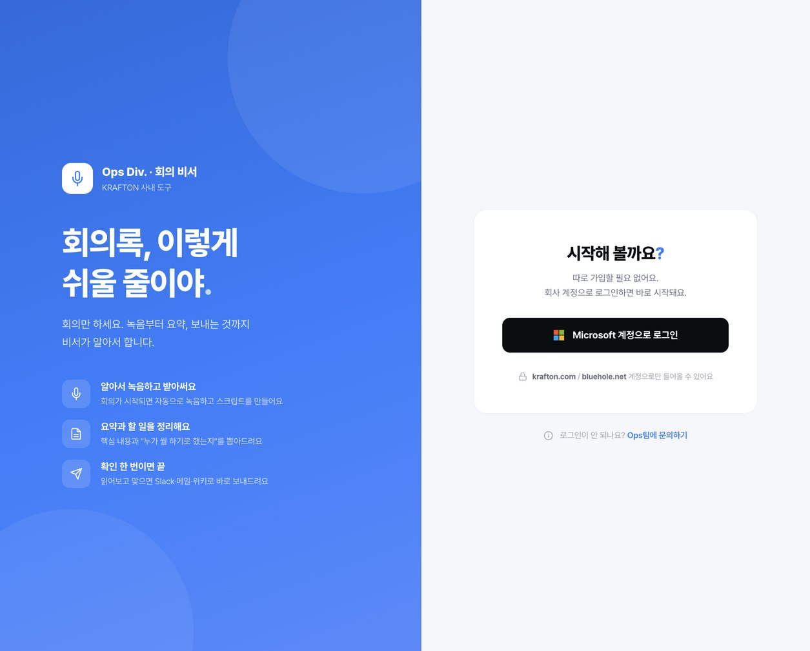
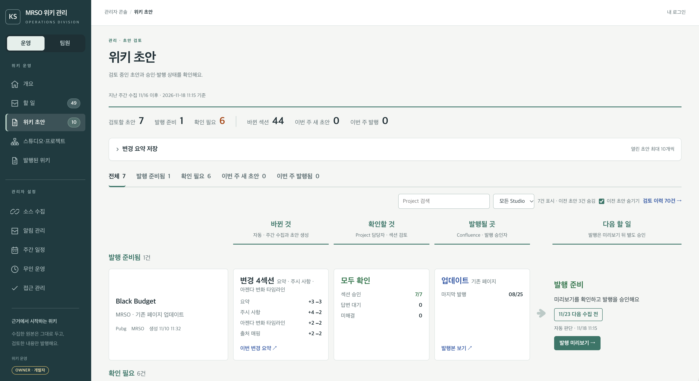
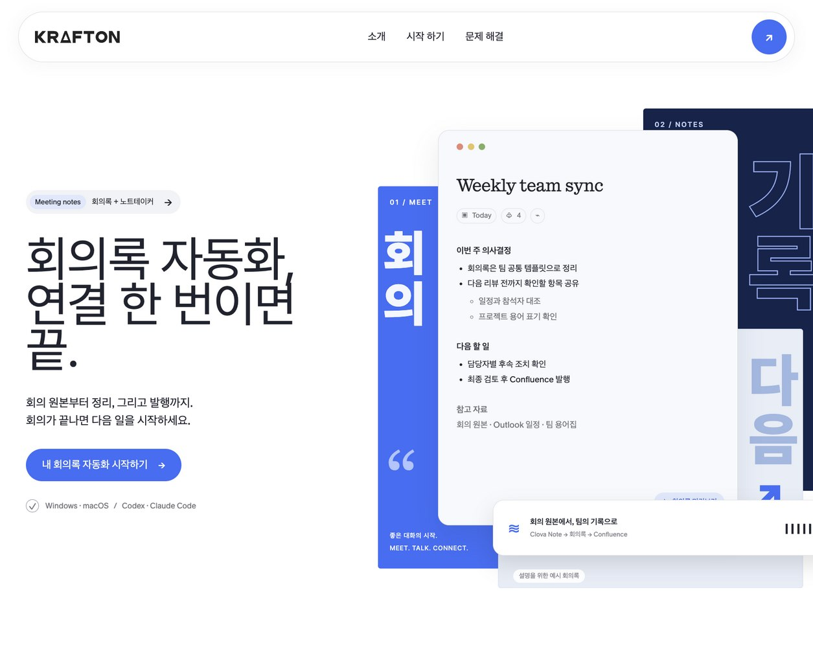
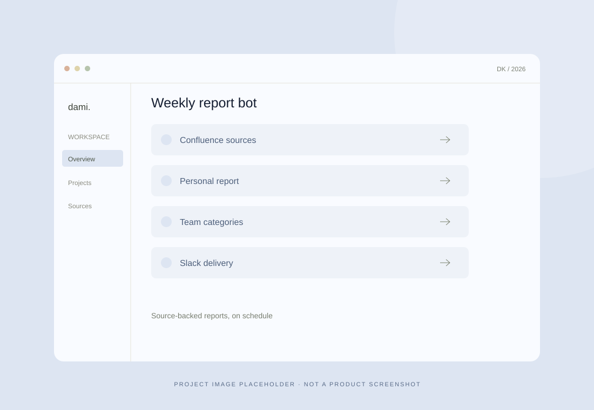
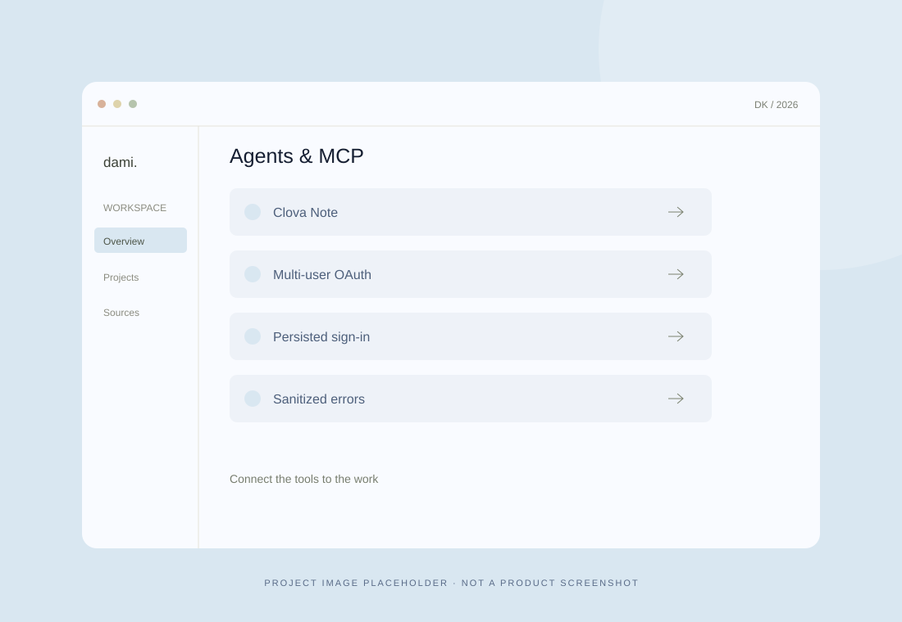
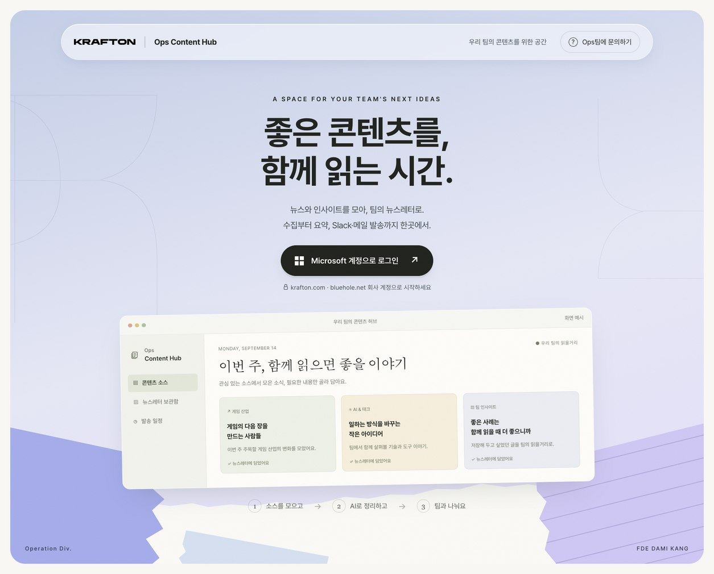
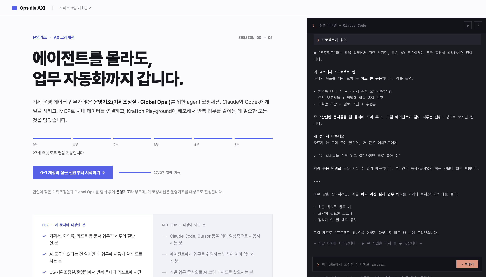
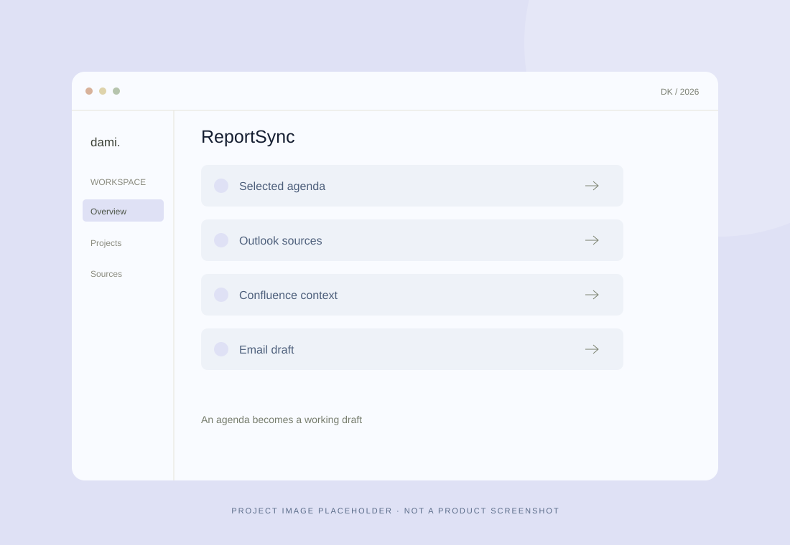
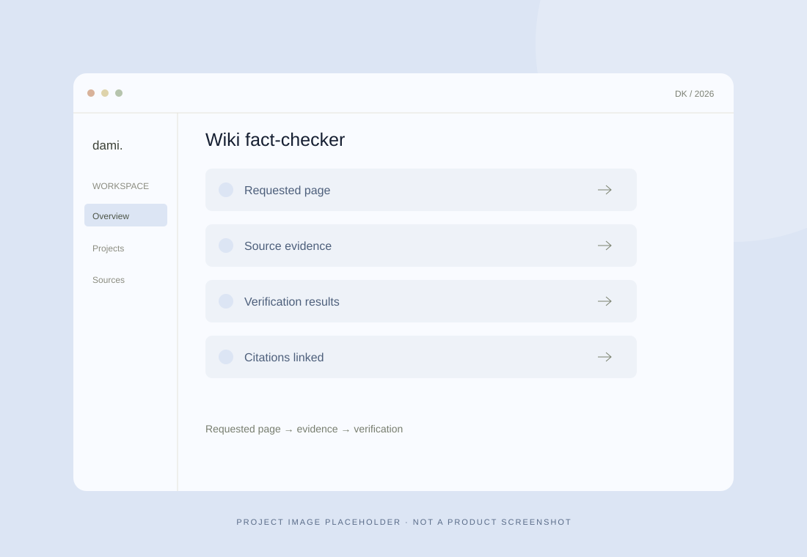

Meeting Notes, web and mobile
A meeting-intelligence platform and an Expo app with live recording, speech-to-text, glossary candidates, and recovery before upload.
View commit history ↗DAMI KANG / KRAFTON PLAYGROUND
AI agents, meeting intelligence, and tools an operations team runs on.
SELECTED WORK / JUNE — NOVEMBER 2026

The largest project in this build log. Teams register sources, review candidate wiki entries, manage a shared glossary, and publish to Confluence or a GitHub data repository.
View commit history ↗Internal repositories require organization access.
Across the work
FIVE AND A HALF MONTHS OF BUILDING
From 3 June to 14 November 2026: 27 repositories, 129 active days, and 2,824 unique commits. Meeting notes, content workflows, AI courses, and a console for reviewed knowledge.
Explore the activity01 / MEETING INTELLIGENCE
Notetaker connects Outlook rosters and MS365 to a drafting pipeline, with meeting detection and recovery for quarantined exports.
View commit history ↗
619 commits across four months. The work began with an environment selector, then expanded into meeting rosters, drafting, export recovery, and handoff documentation.
02 / KNOWLEDGE OPERATIONS
MRSO Console brings collection, review, a shared glossary, and publication into one workflow. Project admins can also run collections through MCP tools.
View commit history ↗03 / MORE OF THE WORK
Recording a meeting, preparing a report, or giving an agent the right tools. Each project starts with a concrete piece of the team's work.

A meeting-intelligence platform and an Expo app with live recording, speech-to-text, glossary candidates, and recovery before upload.
View commit history ↗
Confluence sources become personal weekly reports, delivered through Slack on a schedule each person chooses.
View commit history ↗
A deployable trend agent and a hosted Clova Note MCP service, with multi-user OAuth and sanitized tool errors.
View commit history ↗
04 / OPS CONTENT HUB
The operations bot moved into a hub on EKS, with company SSO and an embedded Hermes agent. Later work connected each person's own Outlook and made connection screens report their true state.
05 / PRACTICAL AI EDUCATION
Two courses written as code: a vibe-coding web deck and intermediate lab, followed by the AX 101 curriculum, handbook, and in-browser practice terminal.
Hands-on material that colleagues can work through, from the first web deck to an intermediate run book and a full course handbook.
Vibe coding course — commits ↗
06 / PROTOTYPES
A two-day evidence-backed Confluence fact-checker. A one-week ReportSync hackathon workspace. Focused prototypes with a clear next step.

Recommends Outlook and Confluence sources for an agenda and drafts the email.
View commit history ↗
Binds verification evidence to the requested Confluence page, within an interactive latency budget.
View commit history ↗Five and a half months, 27 repositories, and 2,824 commits: meeting notes that write themselves, a content hub with an embedded agent, hands-on AI courses for colleagues, and a console that turns scattered Confluence pages into a reviewed wiki.
One bar per day, height is commits authored. The pace climbs from a few a day in June to a sustained run in November.
2,189 non-merge commits and 635 merge commits.
Across Krafton-Playground
Each repository includes at least one attributed commit.
of 165 calendar days
Activity spans five and a half months.
commits on 12 November 2026
A measure of activity, not business impact.
Collected on 14 November 2026. Each unique commit is counted once.
Read the evidence ↗Source: GitHub commit search for dami-krafton in Krafton-Playground. Project descriptions are inferred from commit subjects, not a code audit. Default-branch coverage and account attribution limit this snapshot.
| Repository | Commits | First commit | Latest commit |
|---|---|---|---|
| ops-mrso-console ↗ | 1,329 | 2026-10-24 | 2026-11-14 |
| notetaker-landing ↗ | 619 | 2026-06-18 | 2026-10-29 |
| ops-content-hub ↗ | 287 | 2026-06-20 | 2026-11-13 |
| ops-ax-101 ↗ | 213 | 2026-08-11 | 2026-09-04 |
| vibecoding-01 ↗ | 81 | 2026-07-30 | 2026-08-07 |
| ops-meeting-notes ↗ | 60 | 2026-07-02 | 2026-08-10 |
| kimpo-hackathon ↗ | 55 | 2026-09-21 | 2026-09-28 |
| ops-meeting-notes-mobile ↗ | 48 | 2026-07-11 | 2026-07-16 |
| ops-daily-report ↗ | 35 | 2026-06-26 | 2026-07-07 |
| ops-mrso-console-dev ↗ | 17 | 2026-11-05 | 2026-11-10 |
| wiki-fact-checker ↗ | 16 | 2026-08-06 | 2026-08-07 |
| clovanote-mcp ↗ | 13 | 2026-07-15 | 2026-09-01 |
| vibecode-landing ↗ | 12 | 2026-06-21 | 2026-06-28 |
| clovanote-mcp-mini ↗ | 9 | 2026-06-04 | 2026-06-14 |
| ops-hands-session ↗ | 5 | 2026-08-04 | 2026-08-04 |
| ops-echo ↗ | 4 | 2026-06-06 | 2026-06-17 |
| ops-firecrawl ↗ | 3 | 2026-07-25 | 2026-10-21 |
| hackathon-prep ↗ | 3 | 2026-06-28 | 2026-06-28 |
| ppt-deep-analyze ↗ | 2 | 2026-09-17 | 2026-09-17 |
| sp-workspace ↗ | 2 | 2026-07-29 | 2026-07-29 |
| hackathon-kimpo ↗ | 2 | 2026-09-21 | 2026-09-21 |
| ops-whisper-worker ↗ | 2 | 2026-07-05 | 2026-07-05 |
| test-vibecoding-01 ↗ | 2 | 2026-06-23 | 2026-06-23 |
| Trends-hub-agent ↗ | 2 | 2026-06-03 | 2026-06-03 |
| onboarding-test-02 ↗ | 1 | 2026-08-05 | 2026-08-05 |
| test-mini-ops-app ↗ | 1 | 2026-08-04 | 2026-08-04 |
| test-vibecoding-02 ↗ | 1 | 2026-06-30 | 2026-06-30 |